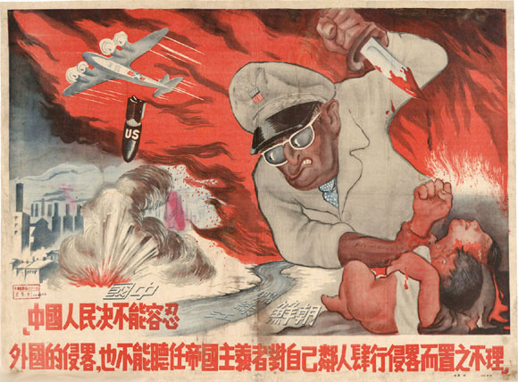
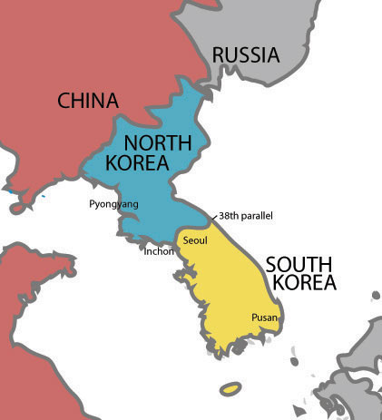
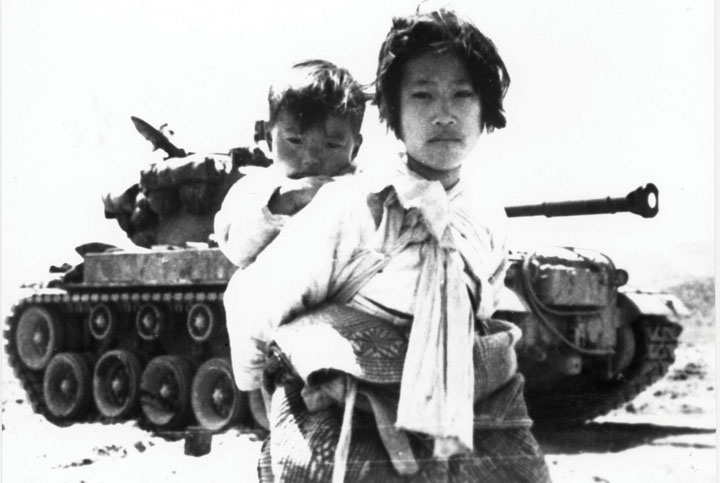
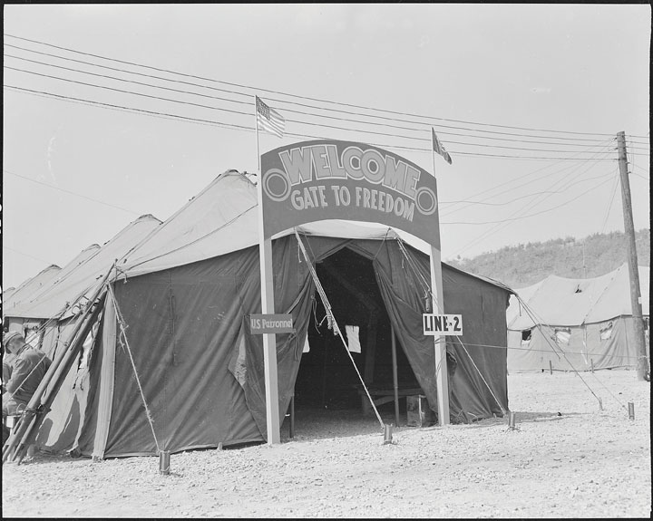
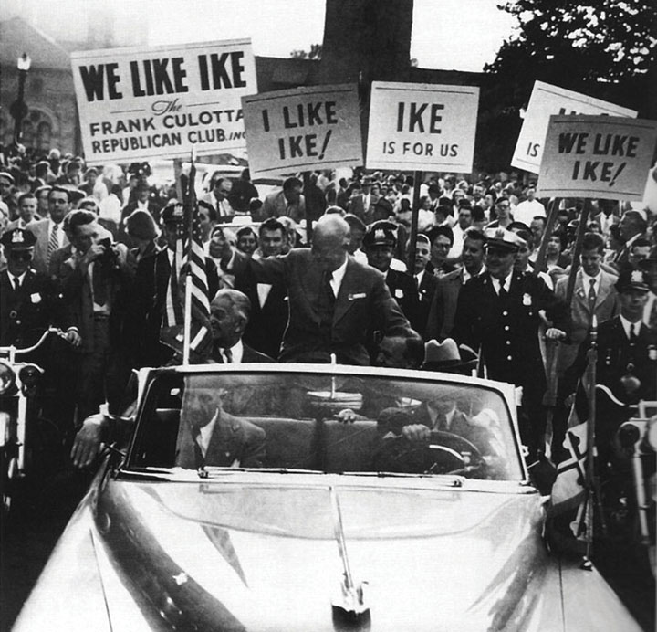
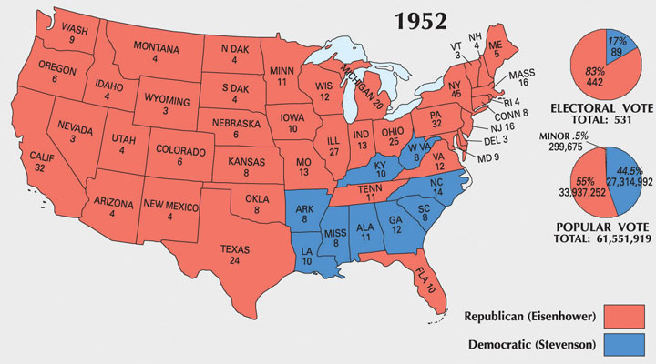

The Korean War is often called “The Forgotten War” due to its marginalization in the historical record. However, the war would have a dramatic effect on the United States and its foreign policy in future decades. At the time, a number of prominent US leaders feared that events might spiral out of control as had occurred in 1914 and 1939. At one point, President Truman himself believed that events in Korea might lead to global warfare. Among those who predicted that Korea would spark World War III were isolationists who believed that America had no business in Asia. Others believed that the fate of “the free world” hinged on whether Communist forces succeeded in their effort to gain control of the Korean peninsula. In the end, the Korean War resulted in a return to the status quo for North and South Korea, but several important precedents were established. The United States determined that it would use military force to stop the spread of Communism. In addition, the president was able to wage war without direct Congressional approval. To this day, the three-year war that cost the lives of 35,000 US soldiers and an estimated 2 to 3 million Koreans is officially known as “the Korean Conflict” in government records.
Figure 9.18
A Chinese propaganda poster showing American General Douglas MacArthur murdering a mother and child, while American bombers expand the war into China by attacking its civilians.
Although both sides tentatively worked together to defend their nation against Japanese forces during World War II, the Chinese civil war resumed in 1945. In May 1949, Communist leader Mao Zedong emerged victorious and declared the People’s Republic of China. The United States had backed the nationalist Chiang Kai-shek who now fled to Taiwan. The United States refused to recognize the authority of Mao’s government and declared that Chiang’s exiled government in Taiwan was the legitimate government for mainland China for the next two decades. Concern by the Western members of the United Nations about allowing Communist China to occupy one of the powerful permanent seats on the UN Security Council also led to Chiang’s small government representing China in the United Nations until 1971.
The Communist victory came despite $2 billion in US aid because of the popular support for Mao and the corruption and inefficiency of Chiang Kai-shek’s regime. The message of Mao and other Communist leaders appealed to the majority of landless and poor farmers of China because it promised equal distribution of land and wealth. In contrast, Chiang Kai-shek used deadly force against peasants who were protesting the rising cost of food. Truman’s administration argued that there was little more the United States could have done to prevent the Communist takeover of China and that direct military intervention would have been a tragic mistake. However, more and more Americans were beginning to believe the accusations of Republican leaders that the Democrats were to blame for the spread of Communism in Asia. Despite their misgivings with the autocratic Chiang Kai-shek, the United States continued to recognize his government in exile as the official government of China. Meanwhile, the Communist government of Mao Zedong worked to consolidate its power and promote the spread of Communism throughout the continent.
Korea was experiencing a similar civil war between nationalist and Communist forces following the end of World War II. Korea was occupied by Japan until the end of World War II when a diplomatic agreement required Japanese forces north of the 38th ParallelLatitude line passing midway through the Korean Peninsula that was used as the dividing line between the Soviet and US sectors during Korea’s postwar reconstruction. The line soon became the frontier between the Communist North Korea and the non-Communist South Korea. to surrender to the Soviets, while those south of the parallel surrendered to the Americans. Just as Germany was divided into different sectors, Korea was soon divided in half along the 38th Parallel. Both the United States in the South and the Soviet Union in the North established governments favorable to their own political orientation.
In South Korea, the United States called for elections to replace a popular Communist leader who had led that nation’s resistance to Japan in World War II. His replacement, Syngman Rhee, was not nearly as autocratic as Chiang Kai-shek. However, like the exiled Chinese nationalist leader, Syngman Rhee never enjoyed the popular support of the people and had little respect for democracy. In the North, the Soviets supported a Communist government led by Kim Il SungKorean nationalist who fought against Japanese occupation of Korea and was appointed by Soviet officials to lead the Communist provisional government for North Korea. In 1948, Kim became the head of North Korea’s Communist government., who displayed even less concern for the opinions of the Korean people whose ideas were different from his own. Historians estimate that as many as 100,000 Koreans perished between 1945 and 1950 as both Rhee and Kim Il Sung sought to reunite Korea under their rule. In addition, both sides (especially the authoritarian Kim Il Sung) used force to silence their opponents in their respective sections of the Korean peninsula.
After four years of occupation, US and Soviet forces left Korea. Both Rhee and Kim Il Sung declared that they were the legitimate rulers of Korea, and both pledged to unite the peninsula under their governments. The North Koreans under Kim Il Sung had the advantage of being supplied with Soviet tanks and other technically advanced equipment, while the Americans were hesitant to provide similar aid to South Korea. There were two main reasons for this reluctance, the first being the corruption of Syngman Rhee’s government and the second being that most US leaders were focused much more heavily on Europe than Asia. That would change dramatically on June 25, 1950, when North Korean troops invaded South Korea.
President Truman, already under fire from a growing Republican contingent in Congress for being “soft on Communism,” was determined to prevent the Communists from seizing South Korea. Truman ordered naval and air support for South Korea. Most Americans at the time believed that Stalin had masterminded the North Korean attack, and both Congress and the public overwhelmingly approved of Truman’s later commitment of US ground forces. Although later critics would accuse the president of waging a war without specific authorization of Congress, House appropriations for increased military budgets met almost no opposition. In addition, only a few senators even pointed out that the president had not sought a declaration of war. The American people were even more supportive of Truman’s actions, believing that waiting for Congressional approval might have caused critical delays. After the war became stalemated, more Americans began to oppose their nation’s actions in Korea, and neither Truman nor Eisenhower returned to Congress to seek a formal declaration of war.
In retrospect, had the North Korean invasion been part of a Red Army scheme, Truman’s decisive but unilateral action might have led to direct military conflict with the Soviet Union. North Korea continued to receive Soviet supplies and Stalin’s blessing throughout the war, but it seems that Kim Il Sung favored the invasion of South Korea and was not simply the puppet of Stalin. America’s primary concern was Europe, the North Korean leader recognized, and his invasion was based on his belief that the United States would not use its military to defend Rhee’s regime in the South. However, South Korea had been the United States’ responsibility after World War II, and so Truman believed its invasion by a Communist regime would cause many to question the United States’ commitment to those fighting Communism around the globe. In addition to a perceived challenge of US credibility, the Korean situation occurred just one year after the Communist takeover of neighboring China. The rapid course of events seemed to many Americans as proof of the Domino Theory and its warning about the inertia of one Communist victory quickly spreading throughout an entire region. Americans who had little knowledge of Korea in 1949 anxiously anticipated each day’s newspaper, eager to find that US forces had turned back the Communist wave they feared threatened to envelop all of Southeast Asia.
Those Americans watching the news from Korea in June and July of 1950 found little to raise their spirits. Nearly 100,000 troops, many of whom had fought for Mao’s Communist forces in China, descended upon the unprepared army of South Korea and quickly occupied the capital of Seoul. The United Nations condemned the North’s aggression, but the only UN members to commit significant numbers of troops to fight the armies of Kim Il Sung were the United States and South Korea. The former would not arrive in significant numbers until August, leaving South Korean troops to what could only be called a “fighting retreat” by the most generous observers.
By August and with US assistance, the South Koreans formed a stable defensive perimeter in the far southeastern corner of their country around the port city of Pusan. With UN forces pinned down behind the Pusan PerimeterA defensive line in the southeastern corner of the Korean Peninsula around the port city of Pusan. UN and South Korean troops were forced to retreat to this corner in the early stages of the Korean War., US General Douglas MacArthur formulated a daring offensive based on an attack where the North Koreans least expected it. Rather than resupply Pusan, he launched an amphibious invasion of the coastal city of Inchon, which was located on the eastern side of the country. The North Koreans had advanced too quickly, the seventy-year-old general surmised, leaving the bulk of their forces in the southern end of the peninsula and their supply lines in the middle of the nation vulnerable to attack. If the marines could somehow overcome the immense tides that led to the construction of fortress-like seawalls around Inchon, US forces could drive a wedge through the North Korean supply lines and trap the invading army between Seoul and Pusan.
On September 15, 1950, 12,000 marines surprised and overwhelmed the North Korean troops during the Inchon InvasionAn amphibious assault launched by US forces under Douglas MacArthur in the Korean War. Rather than resupply UN and South Korean troops holding out in the Pusan Perimeter, MacArthur directed the bulk of his forces to take Inchon and move east, cutting North Korean supply lines and trapping the North Korean troops between his forces and those at Pusan. and established a secured city as a safe landing zone for US troops. Less than two weeks later US and UN forces pushing east and south liberated the South Korean capital of Seoul. Tens of thousands of North Korean troops were able to escape to the north before MacArthur’s forces, now advancing north from Pusan as well as south and east from Inchon, could trap the entire force. Still, the Inchon landing proved to be the turning point in the early phase of the Korean War as half of the North Koreans surrendered and the other half fled back to North Korea. MacArthur’s success enhanced his already legendary status among the US public and led many to support his previously unthinkable plan to attack North Korea itself. After some debate among US and even UN leaders, MacArthur was given authorization to pursue the fleeing Communist army into North Korea in the hopes of reuniting Korea into one non-Communist nation.
Figure 9.19
North Korean troops pushed south across the 38th Parallel, which was intended to be a temporary dividing line. They drove UN and South Korean troops all the way back to Pusan until US forces launched a counteroffensive at Inchon that split the North Korean supply lines and forced them to retreat back across the 38th Parallel.
Turning the war from a defense of their South Korean ally to an attack on Communist North Korea was both a daunting task and a delicate political issue. Mao repeatedly warned that Chinese forces would intervene if US troops came close to the Chinese–North Korean border. MacArthur dismissed these warnings as propaganda and predicted that his forces would occupy all of North Korea by Thanksgiving. At first, it looked as though MacArthur’s bold action would again be vindicated as US and South Korean troops continued their advance on the beleaguered North Korean force. By late November, the North Koreans were relegated to defensive positions near the Chinese border.
Figure 9.20

US troops involved in street fighting during the liberation of Seoul in September 1950. The city would change hands several times during the war, leading to a high number of civilian casualties.
General MacArthur’s estimation of Chinese intentions proved as short-sighted as Kim Il Sung’s earlier belief that the United States would not send troops to Korea. On November 25, several hundred thousand Chinese soldiers crossed into North Korea and forced US and South Korean forces to retreat southward. The rapid conquest of US troops, like that of their North Korean enemy in the first month of the war, meant that US supply lines were stretched thin and vulnerable to the Chinese counterattack. By Christmas of 1950, Chinese troops had driven US and South Korean forces out of North Korea. By January 1951, North Koreans recaptured Seoul and it looked as if the Chinese and North Koreans might drive UN forces all the way back to Pusan.
US and South Korean forces were successful in halting the Korean advance; however, a stalemate soon occurred as the two armies dug in, advancing and retreating within a narrow strip of land near the 38th Parallel. This situation deeply frustrated General MacArthur, who suggested that the United States unleash its arsenal of atomic bombs and even called on President Truman to extend the war into China. MacArthur also wanted to aid the forces of exiled Chinese nationalist Chiang Kai-shek if they agreed to attack the Communist Chinese troops. Truman recognized that the Chinese would view any invasion originating from US-supported Taiwan as tantamount to a US declaration of war on their nation. Instead, the president increased troop levels and launched a counteroffensive in Korea. Matthew RidgewayCommander of the 8th Army in the Korean War, which led a successful counteroffensive against North Korean positions in the winter of 1950–51. Ridgeway succeeded Douglas MacArthur as commander of US forces after the latter was removed by President Truman in April 1951. assumed command of this counterattack and quickly regained control of Seoul. By spring, the North Koreans were forced back across the 38th Parallel. South Korea being secure once again, Truman sought an armistice and a return to the prewar status quo of a divided Korea. MacArthur viewed Truman’s plans as cowardly and tantamount to Communist victory. As a result, he tacitly worked against the president’s peace plan by sending a message to the Chinese demanding unconditional surrender. MacArthur’s message hinted that US forces might invade China and even use nuclear weapons if they refused his offer.
Truman believed that MacArthur’s actions not only violated the constitutional principle of civilian control of the military but also were nothing short of treason, as they threatened to rekindle a war he had hoped to end. General Omar Bradley believed an attack on China would be “the wrong war, in the wrong place, at the wrong time, with the wrong enemy.” The greatest danger, Truman believed, was that an attack against the Chinese would lead to Soviet intervention. The two nations were the leading Communist powers in the world and maintained a mutual assistance pact. As a result Truman and his advisers feared that MacArthur’s unauthorized comments might lead America into World War III. However, politics forced Truman to proceed cautiously against his rogue general. MacArthur was still viewed as a hero and military genius, while Truman’s approval numbers hovered near 30 percent. Republican politicians won victories by associating the president with the recent Communist surge in Asia.
Figure 9.21
A photographer juxtaposes a war-weary Korean with child against the backdrop of an American tank. The war was especially trying for the civilian population.
As the 1950 congressional elections approached, more and more Americans viewed Truman and other Democrats as being “soft” on Communism. Republicans made deep inroads into the previously solid Democratic majority in these elections as a frustrated electorate questioned why the most powerful nation in the world could not prevail against a “backward” nation such as North Korea. Expressions of racial prejudice against Asians that had become commonplace during World War II returned in the form of calls for the use of atomic weapons against civilian populations. Others asserted the federal government was infested with Communists. Why else, they asked, would the great General MacArthur be restricted from pushing forward against other Communist forces? Each day the war continued seemed to confirm the worst of these accusations—US armed forces were being stabbed in the back by their own government and commander in chief.
MacArthur’s insistence on total war in Asia progressed from private conversations and secret communications to nearly insubordinate messages in US newspapers. Popular or not, President Truman recognized that MacArthur’s actions were both insubordinate and potentially dangerous. A general who wrote his own orders violated the sacred American principle of civilian control of the military. For this reason, the Joint Chiefs of Staff supported the president’s decision to relieve MacArthur of command. Many Americans responded with anger upon hearing that the popular general had been so ingloriously removed. Opinion polls demonstrated that the vast majority of Americans backed MacArthur, while Truman’s approval ratings explored new depths. The general returned triumphant, touring the East Coast like a conquering hero complete with marching bands and ticker-tape parades. In an emotional address that made even his detractors weep, the old general thanked the American people for the honor of serving them in the last three wars. “Old soldiers never die,” he concluded, “they just fade away.”
Truman wisely avoided any public statements and allowed MacArthur to enjoy his perhaps long-overdue praise for his decades of military leadership. Only later did Truman explain his decision to replace MacArthur with Ridgeway, detailing to Congress how MacArthur had sought to escalate the war. Truman’s argument demonstrated the wisdom of limited war, and Congress responded with a statement thanking MacArthur for his service but concurring with the president’s decision. Within weeks, the press and US public continued to discuss the issue, the majority likewise agreeing that any expansion of the Korean War beyond the Korean Peninsula would have been a tragic mistake. President Truman’s public image was at least partially restored while those who favored MacArthur’s invasion faded away.
Figure 9.22
Disputes regarding prisoner exchanges and repatriation led the war to continue into 1953. This photo shows a tent where American prisoners of war were processed before being welcomed back into camp.
The United Nations attempted to negotiate an armistice throughout the next two and a half years, but talks bogged down on three major controversies. The first was the location of the border between North and South Korea. Second, the UN wanted to create a demilitarized zone that would discourage future invasions, a provision that also discouraged the prospects of later Korean reunification. Finally, the United States insisted that Chinese and North Korean prisoners of war should have the choice of returning to the nations they had served or staying in the Western-backed South Korea.
This later point was especially important to Truman for both humanitarian and political reasons. Nearly half of the more than 100,000 North Korean and Chinese prisoners indicated a desire to live in Taiwan or South Korea. Truman believed that living conditions were significantly better in Taiwan and South Korea and likewise predicted that the world would interpret the abandonment of North Korea and China by their own soldiers as a powerful message about the superiority of the US-backed Taiwan and South Korea. For this reason, the Chinese and North Koreans refused peace terms until July 1953. By this time, the World War II hero Dwight D. EisenhowerFive-star general and Supreme Allied Commander in World War II. After seven years of avoiding politics, Eisenhower accepted the Republican nomination and defeated Adlai Stevenson in the presidential election of 1952. was president.
The former Supreme Allied Commander approved the treaty, which did little more than provide for a ceasefire and the exit of US troops. Truman was at least partially vindicated as half of the Communist prisoners of war chose to stay in Korea. However, the armistice essentially demonstrated the futility of the last three years of fighting. A line near the 38th Parallel became the southern border between Communist North Korea and the non-Communist South. Both sides maintain large military forces along their common border, and neither signed any kind of treaty. In fact, both nations are still technically at war with one another—one of many lasting consequences of the global Cold War.
The war took an incredible toll on the people who lived on both sides of the Korean Peninsula. US troops dropped 650,000 tons of explosives on North and South Korea, following a “scorched earth” strategy devised during the Pacific Campaign of World War II but now unleashed on a peninsula home to 20 million Koreans. NapalmAn incredibly flammable substance formed by turning gasoline into a jelly-like form that is then mixed with other incendiary agents. and US bombing destroyed more than a thousand villages and nearly eliminated the entire agricultural production of both nations by deliberately attacking irrigation systems. These attacks did cut supply lines and eliminate the ability of enemy troops to live off the land, but not until the ability of peasants to similarly provision themselves had been destroyed. An estimated 4 million Koreans lost their lives. Starvation, more than weapons of all armies combined, accounted for the devastating casualties that reduced the population of both North and South Korea by 10 percent in four years. No US war has ever taken the lives of such a high proportion of a nation’s civilian population. In addition, for the 35,000 US soldiers who lost their lives and the more than 100,000 who were wounded, the Korean War was equally devastating.
Truman’s come-from-behind victory in 1948 seemed unlikely to reoccur as the 1952 presidential election neared. His approval ratings dipped below 30 percent during the Korean War, which was increasingly labeled “Truman’s War.” The United States would spend $21 million fighting the armies of North Korea and China, and by 1951, it was clear it would not result in the quick and decisive victory Americans expected. As a result, Truman declined to run for reelection, and the Democrats nominated Adlai StevensonIllinois governor who secured the Democratic nomination for president in 1952 and 1956. Stevenson lost both elections to Eisenhower. In 1961, President Kennedy appointed Stevenson US ambassador to the United Nations where he served until his death in 1965. at their convention in Chicago. Stevenson was a former attorney and governor of Illinois and was a well-respected member of the party. However, his reputation paled in comparison to his Republican opponent, former Allied Supreme Commander Dwight D. Eisenhower.
Eisenhower had never been a member of either the Republican or Democratic parties. In fact, he hadn’t even voted for two decades. Yet because of his immense popularity, leaders of both parties tried to convince the former Supreme Allied Commander of Europe to run under their banner. Truman and Eisenhower shared mutual admiration and similar political views on international affairs; however, Eisenhower was deeply conservative when it came to domestic policies. He opposed any expansion of New Deal initiatives and viewed civil rights as an issue the federal government should avoid. As a result, the Republican offer was the only one to which he gave serious consideration.
Stevenson and Eisenhower had similar political views. Neither favored expansive government programs like public housing, and both viewed civil rights as a matter best left to individual states and were ardent cold warriors who supported containment of Communism, nuclear deterrence, and a strong military. Both sought to end the Korean War and reduce defense spending but agreed that the nation must be prepared to confront Communist expansion throughout the globe. Stevenson and the Democrats avoided statements on civil rights like those that led to the “Dixiecrat secession” of their Southern delegates at the 1948 Democratic convention. Ironically, Stevenson’s avoidance of civil rights ensured him the vote of the Deep South but did little to help his electoral prospects in Florida, Texas, Virginia, and Tennessee, which, like the rest of the nation, chose the war hero Eisenhower.
Figure 9.23
Dwight Eisenhower was greeted by large crowds during his campaign for president, such as this enthusiastic throng in Baltimore.
With both candidates holding similar views on most of the leading issues, the election became a contest of popular perceptions about the personality of the candidates themselves. Given the already high public approval of Eisenhower, Republican campaign managers keyed in on the image of the war hero and contrasted “Ike” with the wealthy and intellectual Stevenson. Eisenhower’s running mate Richard NixonShrewd politician and vice presidential running mate under Eisenhower, Richard Nixon sought to transform the image of the Republican Party from its association with promoting the interests of business leaders to the defender of the common man. Ruthless in his attacks against political rivals, Nixon was equally skilled in using populist language to appeal to the masses—a skill that catapulted him into the White House in the 1968 presidential election. had risen to fame through his enthusiastic pursuit of alleged subversives as a member of the House Un-American Activities Committee. In 1950, Nixon defeated Helen Gahagan Douglas in a vicious California senatorial campaign in which Nixon accused Douglas of being a Communist who was “pink down to her underwear.”
Nixon’s chief contribution to the presidential campaign was to raise similar doubts as to the political orientation of Stevenson. Nixon was prone to “accidentally” referring to his running mate’s opponent as “Alger” instead of Adlai. He corrected himself each time, but it was clear that Nixon was hoping to connect Stevenson with recently convicted Soviet spy Alger Hiss. Other members of the right joined the fray, as McCarthy labeled the last two decades of Democratic administrations as “twenty years of treason.” Eisenhower found these attacks distasteful but did little to stop them. And while Stevenson purchased time on television and radio programs to deliver lengthy speeches, Eisenhower was featured in carefully staged television advertisements. These brief commercials anticipated modern campaign ads by featuring the candidate as a courageous war hero, loving family man, and trustworthy advocate of the working class. They conveyed little information and oversimplified complex issues, but they were also remarkably upbeat.
Figure 9.24
Dwight Eisenhower won the presidential election of 1952 with over 80% of the electoral vote. The former Supreme Allied Commander even won a handful of Southern states that had not voted Republican since the early years of Reconstruction.
There was little Stevenson could do to counter either Nixon’s attacks or Eisenhower’s sentimental advertisements. Any denial of the charges of Communist sympathies would serve only to reinforce the McCarthy-inspired tactics of his detractors by further associating words like “Communism” with his own image in the public mind. Eisenhower’s television advertisements, like his promise to personally visit Korea, were likewise difficult to counter. These strategies combined with the overwhelming popularity of Eisenhower explain why he won more than 55 percent of the popular vote. Once the election was over, however, many Americans realized that they had no clear idea of what their new president would actually do while in office. Eisenhower gave neither an indication of how his visit to Korea would improve the situation nor did he explain what he meant when he promised an “honorable end” to the conflict.
Even more troublesome to some political observers was the use of vague slogans such as “I like Ike,” which to them seemed more appropriate for a merchandising campaign than a presidential election. A leading newspaper editor accused Eisenhower’s campaign managers of “selling the president like toothpaste.” However, the slogan proved effective due to the overwhelmingly positive public perception of Eisenhower. The former five-star general had led the United States to victory in Europe, and many Americans were confident he would find a way to prevail in Korea. Eisenhower’s presence on the ticket lifted the entire Republican Party, who seized control of both the Senate and the House of Representatives. Republicans now controlled both houses of Congress and the presidency for the first time in over two decades.